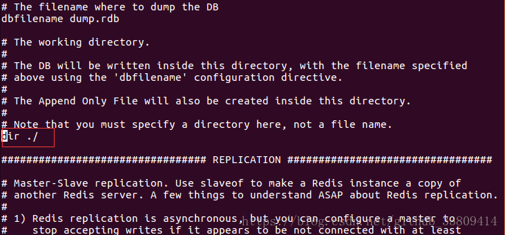

<!DOCTYPE html><html lang="en"><head><meta name="generator" content="Hexo 3.9.0"><meta charset="utf-8"><meta name="keywords" content="andus, ysl, songlinsheep, blog, 松林羊, 个人站点, 个人网站"><meta name="description" content="andus, ysl, songlinsheep, blog, 松林羊, 个人站点, 个人网站"><meta name="viewport" content="width=device-width,initial-scale=1,maximum-scale=1"><title> Redis第一次启动，SHUTDOWN时提示： (error) ERR Errors trying to SHUTDOWN. Check logs. | 松林羊</title><link rel="shortcut icon" href="/smile.ico"><link rel="stylesheet" href="/css/style.css"><link rel="stylesheet" href="/fancybox/jquery.fancybox.min.css"><script src="/js/pace.min.js"></script><script>!function(e,t,o,c,i,a,n){e.DaoVoiceObject=i,e[i]=e[i]||function(){(e[i].q=e[i].q||[]).push(arguments)},e[i].l=1*new Date,a=t.createElement(o),n=t.getElementsByTagName(o)[0],a.async=1,a.src=c,a.charset="utf-8",n.parentNode.insertBefore(a,n)}(window,document,"script",("https:"==document.location.protocol?"https:":"http:")+"//widget.daovoice.io/widget/0f81ff2f.js","daovoice"),daovoice("init",{app_id:"1559132c"}),daovoice("update")</script></head></html><body><main class="content"><section class="outer"><article id="post-Redis第一次启动，SHUTDOWN时提示：-error-ERR-Errors-trying-to-SHUTDOWN-Check-logs" class="article article-type-post" itemscope itemprop="blogPost" data-scroll-reveal><div class="article-inner"><header class="article-header"><h1 class="article-title" itemprop="name"> Redis第一次启动，SHUTDOWN时提示： (error) ERR Errors trying to SHUTDOWN. Check logs.</h1></header><div class="article-meta"> <a href="/2018/09/13/Redis第一次启动，SHUTDOWN时提示：-error-ERR-Errors-trying-to-SHUTDOWN-Check-logs/" class="article-date"><time datetime="2018-09-13T01:18:21.000Z" itemprop="datePublished">2018-09-13</time></a><div class="article-category"> <a class="article-category-link" href="/categories/数据库/">数据库</a></div> &emsp;<i class="fe fe-bar-chart"></i> <span class="post-count">336</span>字 &emsp;<i class="fe fe-clock"></i> <span class="post-count">1</span>分钟</div><div class="tocbot"></div><div class="article-entry" itemprop="articleBody"><p>今天我也是第一次玩redis，从下载到安装到HelloWorld一切顺风顺水，谁知在最后关闭redis时，出现了<code>(error) ERR Errors trying to SHUTDOWN. Check logs.</code>错误。下面贴出我的解决过程（可能有点繁琐）</p><ul><li>环境<br>Ubuntu 18.04 LTS<br>redis-4.0.11</li></ul><h4 id="错误重现"><a href="#错误重现" class="headerlink" title="错误重现"></a>错误重现</h4><p></p><h4 id="解决过程"><a href="#解决过程" class="headerlink" title="解决过程"></a>解决过程</h4><p>很明显不保存就能关闭，多半跟日志文件有关系，就直接查看配置文件中关于日志的配置，如下：<br><br>进行如下修改：<br><br>再次启动，居然报错：<br><br>于是查看日志文件权限，发现只有root用户有写权限：<br><br>修改日志文件权限：<br><br>再次启动：<br><br>再次关闭，问题依然，感觉一朝回到解放前：<br><br>继续找问题, 大致跟刚才同样的思路，找那种没有写权限的地方，发现如下：<br><br>于是，查看一下<code>/usr/local/myredis</code>文件夹权限，与之前日志文件权限一样：<br><br>索性直接把目录改成自己定义的：<br><br>修改<code>/usr/local/myredis/db_files/</code>目录权限：<br><br>查看结果：<br><br>希望能对你有所帮助！</p></div><footer class="article-footer"><ul class="article-tag-list"><li class="article-tag-list-item"><a class="article-tag-list-link" href="/tags/Redis/">Redis</a></li></ul><div style="text-align:center;color:#ccc;font-size:14px;margin-top:10px"> ------------- 本文结束&nbsp;<i class="fe fe-smile"></i>&nbsp;感谢您的阅读 -------------</div></footer></div><nav class="article-nav"> <a href="/2019/07/21/Linux-Ubuntu-18-04-LTS-使用记录/" class="article-nav-link"><strong class="article-nav-caption">前一篇</strong><div class="article-nav-title"> Linux(Ubuntu 18.04 LTS)使用记录</div></a> <a href="/2018/08/27/MySQL数据库字段级权限设计/" class="article-nav-link"><strong class="article-nav-caption">后一篇</strong><div class="article-nav-title">MySQL数据库字段级权限设计</div></a></nav><div class="gitalk" id="gitalk-container"></div><link rel="stylesheet" href="https://unpkg.com/gitalk/dist/gitalk.css"><script src="https://unpkg.com/gitalk/dist/gitalk.min.js"></script><script src="https://cdn.bootcss.com/blueimp-md5/2.10.0/js/md5.min.js"></script><script type="text/javascript">var gitalk=new Gitalk({clientID:"b2aefba3a8adad5bf2f5",clientSecret:"59c734c0cc341bf3df8fe19109ca9da78513a29a",repo:"hexo-blog-gitalk",owner:"andus-top",admin:["andus-top"],id:md5(location.pathname),distractionFreeMode:!1,pagerDirection:"last"});gitalk.render("gitalk-container")</script></article></section><footer class="footer"><div class="outer"><ul class="list-inline"><li>&copy; 2019 松林羊</li><li>Theme <a href="https://github.com/zhwangart/hexo-theme-ocean">Ocean</a></li><ul class="list-inline"><li><i class="fe fe-smile-alt"></i> 访客数:<span id="busuanzi_value_site_uv"></span></li></ul></ul><ul class="list-inline"><li>全站共<span class="post-count">6.6k</span>字</li><ul class="list-inline"><li><span id="timeDate">载入天数...</span><span id="times">载入时分秒...</span></li></ul><script>var now=new Date;function createtime(){var n=new Date("07/28/2019 10:02:00");now.setTime(now.getTime()+250),days=(now-n)/1e3/60/60/24,dnum=Math.floor(days),hours=(now-n)/1e3/60/60-24*dnum,hnum=Math.floor(hours),1==String(hnum).length&&(hnum="0"+hnum),minutes=(now-n)/1e3/60-1440*dnum-60*hnum,mnum=Math.floor(minutes),1==String(mnum).length&&(mnum="0"+mnum),seconds=(now-n)/1e3-86400*dnum-3600*hnum-60*mnum,snum=Math.round(seconds),1==String(snum).length&&(snum="0"+snum),document.getElementById("timeDate").innerHTML="已运行 "+dnum+" 天 ",document.getElementById("times").innerHTML=hnum+" 小时 "+mnum+" 分 "+snum+" 秒"}setInterval("createtime()",250)</script></ul></div></footer></main><aside class="sidebar sidebar-specter"> <button class="navbar-toggle"></button><nav class="navbar"><div class="logo"> <a href="/"></a></div><ul class="nav nav-main"><li class="nav-item"> <a class="nav-item-link" href="/">主页</a></li><li class="nav-item"> <a class="nav-item-link" href="/archives">归档</a></li><li class="nav-item"> <a class="nav-item-link" href="/categories">分类</a></li><li class="nav-item"> <a class="nav-item-link" href="/tags">标签</a></li><li class="nav-item"> <a class="nav-item-link" href="/links">友链</a></li><li class="nav-item"> <a class="nav-item-link" href="/about">关于</a></li><li class="nav-item"> <a class="nav-item-link" href="http://stars.andus.top/" target="_blank">点滴</a></li><li class="nav-item"> <a class="nav-item-link" href="http://resume.andus.top/" target="_blank">简历</a></li><li class="nav-item"> <a class="nav-item-link" href="/resource">资源</a></li><li class="nav-item"><a class="nav-item-link nav-item-search" title="搜索"><i class="fe fe-search"></i> 搜索</a></li></ul></nav><nav class="navbar navbar-bottom"><ul class="nav"><li class="nav-item"><div class="totop" id="totop"><i class="fe fe-rocket"></i></div></li><li class="nav-item"></li></ul></nav><div class="search-form-wrap"><div class="local-search local-search-plugin"> <input type="search" id="local-search-input" class="local-search-input" placeholder="Search..."><div id="local-search-result" class="local-search-result"></div></div></div></aside><script src="/js/jquery-2.0.3.min.js"></script><script src="/js/jquery.justifiedGallery.min.js"></script><script src="/js/lazyload.min.js"></script><script src="/js/busuanzi-2.3.pure.min.js"></script><script src="/fancybox/jquery.fancybox.min.js"></script><script src="/js/tocbot.min.js"></script><script>900<=document.body.clientWidth&&tocbot.init({tocSelector:".tocbot",contentSelector:".article-entry",headingSelector:"h1, h2, h3, h4, h5, h6",hasInnerContainers:!0,scrollSmooth:!0,positionFixedSelector:".tocbot",positionFixedClass:"is-position-fixed",fixedSidebarOffset:"auto"})</script><script src="/js/ocean.js"></script><script src="/js/andus.js"></script><script src="/js/love.js"></script><canvas class="fireworks" style="position:fixed;left:0;top:0;z-index:1;pointer-events:none"></canvas><script src="/js/anime.min.js"></script><script src="/js/fireworks.js"></script><script src="/live2dw/lib/L2Dwidget.min.js?094cbace49a39548bed64abff5988b05"></script><script>L2Dwidget.init({model:{scale:1,hHeadPos:.5,vHeadPos:.618,jsonPath:"/live2dw/assets/haruto.model.json"},display:{superSample:2,width:150,height:300,position:"left",hOffset:0,vOffset:-20},mobile:{show:!1},react:{opacityDefault:.5,opacityOnHover:.2},log:!1,pluginJsPath:"lib/",pluginModelPath:"assets/",pluginRootPath:"live2dw/",tagMode:!1})</script></body>